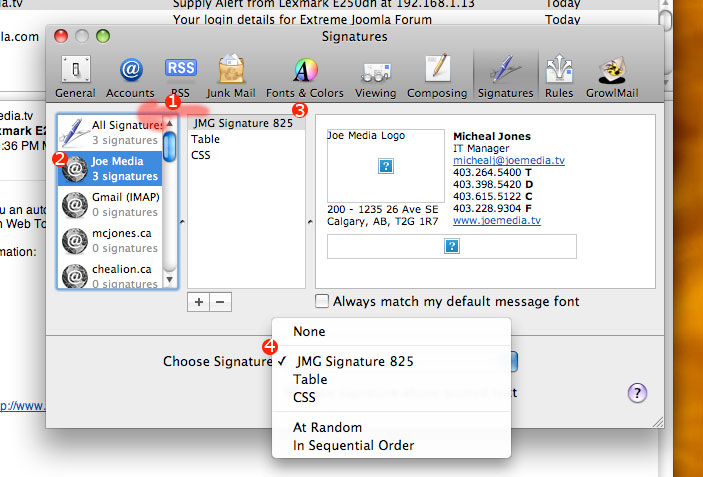

Choosing Signature
The last step to set up your signature is to select in the Mail.app preferences. To do so simply open the preferences and choose the signatures section. (As seen in Figure 1.1)
1. Drag the new signature from the All Signatures area to your account
2. Click on your account in the left hand pane and then
3. Click on the new signature and
4. Choose Signature - choose your new signature.
5. Close the window
The next couple steps aren't needed but will remove the ?s from showing up when you are writing your message - the signature does send correctly but doesn't appear correctly in your message window at first.
6. Create and send a new email to yourself using the new signature in order to see if it works.
7. Check your email again and view your new signature - the ?s will disappear when writing an email now. (It's a cosmetic annoyance to do these last two steps)
Congrats, you're all done!
